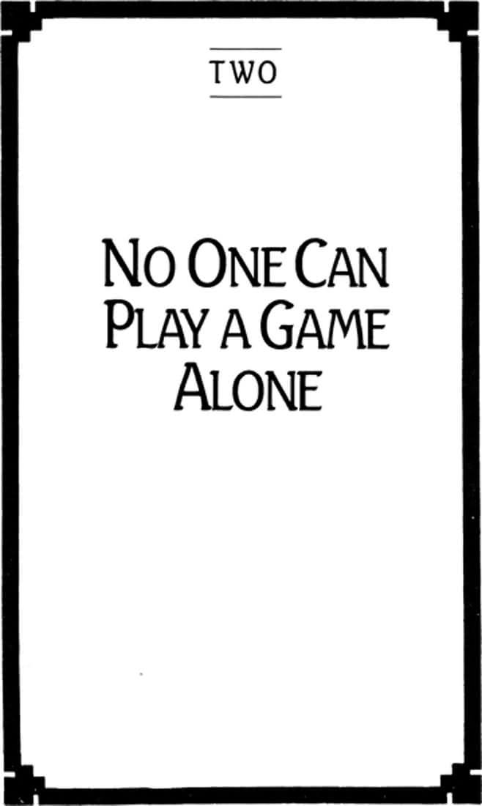

Chapter Two: No One Can Play a Game Alone

32
NO ONE CAN PLAY a game alone. One cannot be human by oneself. There is no selfhood where there is no community. We do not relate to others as the persons we are; we are who we are in relating to others.
Simultaneously the others with whom we are in relation are themselves in relation. We cannot relate to anyone who is not also relating to us. Our social existence has, therefore, an inescapably fluid character. This is not to say that we live in a fluid context, but that our lives are themselves fluid. As in the Zen image we are not the stones over which the stream of the world flows; we are the stream itself. As we shall see, this ceaseless change does not mean discontinuity; rather change is itself the very basis of our continuity as persons. Only that which can change can continue: this is the principle by which infinite players live.
The fluidity of our social and therefore personal existence is a function of our essential freedom—the kind of freedom indicated in the formula “Who must play, cannot play.” Of course, as we have seen, finite games cannot have fluid boundaries, for if they do it will be impossible to agree on winners. But finite games float, as it were, in the unconstrained choice each player makes in entering and continuing the play. Finite games sometimes appear, therefore, to have fixed points of social reference. Not only are there true and false ways of loving your country, for example; there is a positive requirement that you do so.
It is this essential fluidity of our humanness that is irreconcilable with the seriousness of finite play. It is, therefore, this fluidity that presents us with an unavoidable challenge: how to contain the serious within the truly playful; that is, how to keep all our finite games in infinite play.
This challenge is commonly misunderstood as the need to find room for playfulness within finite games. This is what was referred to above as playing at, or perhaps playing around, a kind of play that has no consequence. This is the sort of playfulness implied in the ordinary sense of such terms as entertainment, amusement, diversion, comic relief, recreation, relaxation. Inevitably, however, seriousness will creep back into this kind of play. The executive’s vacation, like the football team’s time out, comes to be a device for refreshing the contestant for a higher level of competition. Even the open playfulness of children is exploited through organized athletic, artistic, and educational regimens as a means of preparing the young for serious adult competition.
33
When Bismarck described politics as the art of the possible, he meant, of course, that the possible is to be found somewhere within fixed limits, within social realities. He plainly did not mean that the possible extended to those limits themselves. Such a politics is therefore seriousness itself, especially since politicians of nearly every ideology represent themselves as champions of freedom, doing what is necessary and even distasteful toward the end of enlarging the range of the possible. “We must learn the fine arts of war and independence so that our children can learn architecture and engineering so that their children may learn the fine arts and painting” (John Quincy Adams).
The interest of infinite players has little in common with such politics, since they are not concerned to find how much freedom is available within the given realities—for this is freedom only in the trivial sense of playing at—but are concerned to show how freely we have decided to place these particular boundaries around our finite play. They remind us that political realities do not precede, but follow from, the essential fluidity of our humanness.
This does not mean that infinite players are politically disengaged; it means rather that they are political without having a politics, a paradoxical position easily misinterpreted. To have a politics is to have a set of rules by which one attempts to reach a desired end; to be political—in the sense meant here—is to recast rules in the attempt to eliminate all societal ends, that is, to maintain the essential fluidity of human association.
To be political in the mode of infinite play is by no means to disregard the appalling conditions under which many human beings live, the elimination of which is the professed end of much politics. We can imagine infinite players nodding thoughtfully at Rousseau’s famous declaration: “Man is born free, and everywhere he is in chains.” They can see that the dream of freedom is universal, that wars are fought to win it, heroes die to protect it, and songs are written to commemorate its attainment. But in the infinite player’s vision of political affairs the element of intentionality and willfulness, so easily obscured in the exigencies of public crisis, stands out in clear relief. Therefore, even warfare and heroism are seen with their self-contradictions in full display. No nation can go to war until it has found another that can agree to the terms of the conflict. Each side must therefore be in complicity with the other: Before I can have an enemy, I must persuade another to recognize me as an enemy. I cannot be a hero unless I can first find someone who will threaten my life—or, better, take my life. Once under way, warfare and acts of heroism have all the appearance of necessity, but that appearance is but a veil over the often complicated maneuvers by which the antagonists have arranged their conflict with each other.
Therefore, for infinite players, politics is a form of theatricality. It is the performance of roles before an audience, according to a script whose last scene is known in advance by the performers. The United States did not, for example, lose its war in Southeast Asia so much as lose its audience for a war. No doubt much of the disillusion and bitterness of its warriors comes from the missing final scene—the hero’s homecoming to parades or ceremonial burial—an anticipated scene that carries many into battle.
It is because of the essential theatricality of politics that infinite players do not take sides in political issues—at least not seriously. Instead they enter into social conflict dramatically, attempting to offer a vision of continuity and open-endedness in place of the heroic final scene. In doing so they must at the very least draw the attention of other political participants not to what they feel they must do, but to why they feel they must do it.
In their own political engagements infinite players make a distinction between society and culture. Society they understand as the sum of those relations that are under some form of public constraint, culture as whatever we do with each other by undirected choice. If society is all that a people feels it must do, culture “is the realm of the variable, free, not necessarily universal, of all that cannot lay claim to compulsive authority” (Burckhardt).
The infinite player’s understanding of society is not to be confused with, say, natural instinct, or any other form of involuntary activity. Society remains entirely within our free choice in quite the same way that finite competition, however strenuous or costly to the player, never prevents the player from walking off the field of play. Society applies only to those areas of action which are believed to be necessary.
Just as infinite play cannot be contained within finite play, culture cannot be authentic if held within the boundaries of a society. Of course, it is often the strategy of a society to initiate and embrace a culture as exclusively its own. Culture so bounded may even be so lavishly subsidized and encouraged by society that it has the appearance of open-ended activity, but in fact it is designed to serve societal interests in every case—like the socialist realism of Soviet art.
Society and culture are therefore not true opponents of each other. Rather society is a species of culture that persists in contradicting itself, a freely organized attempt to conceal the freedom of the organizers and the organized, an attempt to forget that we have willfully forgotten our decision to enter this or that contest and to continue in it.
34
If we think of society as all that a people does under the veil of necessity, we must also think of it as a single finite game that includes any number of smaller games within its boundaries.
A large society will consist of a wide variety of games—though all somehow connected, inasmuch as they have a bearing on a final societal ranking. Schools are a species of finite play to the degree that they bestow ranked awards on those who win degrees from them. Those awards in turn qualify graduates for competition in still higher games—certain prestigious colleges, for example, and then certain professional schools beyond that, with a continuing sequence of higher games in each of the professions, and so forth. It is not uncommon for families to think of themselves as a competitive unit in a broader finite game for which they are training their members in the struggle for societally visible titles.
Like a finite game, a society is numerically, spatially, and temporally limited. Its citizenship is precisely defined, its boundaries are inviolable, and its past is enshrined.
The power of citizens in a society is determined by their ranking in games that have been played. A society preserves its memory of past winners. Its record-keeping functions are crucial to societal order. Large bureaucracies grow out of the need to verify the numerous entitlements of the citizens of that society.
The power of a society is determined by its victory over other societies in still larger finite games. Its most treasured memories are those of the heroes fallen in victorious battles with other societies. Heroes of lost battles are almost never memorialized. Foch has his monument, but not Petain; Lincoln, but not Jefferson Davis; Lenin, but not Trotsky.
The power in a society is guaranteed and enhanced by the power of a society.
The prizes won by its citizens can be protected only if the society as a whole remains powerful in relation to other societies. Those who desire the permanence of their prizes will work to sustain the permanence of the whole. Patriotism in one or several of its many forms (chauvinism, racism, sexism, nationalism, regionalism) is an ingredient in all societal play.
Because power is inherently patriotic, it is characteristic of finite players to seek a growth of power in a society as a way of increasing the power of a society. It is in the interest of a society therefore to encourage competition within itself, to establish the largest possible number of prizes, for the holders of prizes will be those most likely to defend the society as a whole against its competitors.
35
Culture, on the other hand, is an infinite game. Culture has no boundaries. Anyone can be a participant in a culture—anywhere and at any time.
Because a society maintains careful temporal limits, it understands its past as destiny; that is, its course of history lies between a definitive beginning (the founders of a society are always especially memorialized) and a definitive ending. (The nature of its victory is repeatedly anticipated in official declarations; “to each according to their need, from each according to their ability,” for example.)
Because culture as such can have no temporal limits, a culture understands its past not as destiny, but as history, that is, as a narrative that has begun but points always toward the endlessly open. Culture is an enterprise of mortals, disdaining to protect themselves against surprise. Living in the strength of their vision, they eschew power and make joyous play of boundaries.
Society is a manifestation of power. It is theatrical, having an established script. Deviations from the script are evident at once. Deviation is antisocietal and therefore forbidden by society under a variety of sanctions. It is easy to see why deviancy is to be resisted. If persons did not adhere to the standing rules of the society, any number of rules would change, and some would be dropped altogether. This would mean that past winners no longer warrant ceremonial recognition of their titles and are therefore without power—like Russian princes after the Revolution.
It is a highly valued function of society to prevent changes in the rules of the many games it embraces. Such procedures as academic accreditation, licensure of trades and professions, synodical ordination, parliamentary confirmation of official appointments, and the inauguration of political leaders are acts of the larger society allowing persons to compete in the finite games within it.
Deviancy, however, is the very essence of culture. Whoever merely follows the script, merely repeating the past, is culturally impoverished.
There are variations in the quality of deviation; not all divergence from the past is culturally significant. Any attempt to vary from the past in such a way as to cut the past off, causing it to be forgotten, has little cultural importance. Greater significance attaches to those variations that bring the tradition into view in a new way, allowing the familiar to be seen as unfamiliar, as requiring a new appraisal of all that we have been—and therefore of all that we are.
Cultural deviation does not return us to the past, but continues what was begun and not finished in the past. Societal convention, on the other hand, requires that a completed past be repeated in the future. Society has all the seriousness of immortal necessity; culture resounds with the laughter of unexpected possibility. Society is abstract, culture concrete.
Finite games can be played again; they can be played an indefinite number of times. It is true that the winners of a game are always the winners of a game played at that particular time, but the validity of their titles depends on the repeatability of that game. We memorialize early football greats but would not do so if football had vanished after its first decade.
As we have seen, because an infinite game cannot be brought to an end, it cannot be repeated. Unrepeatability is a characteristic of culture everywhere. Mozart’s Jupiter Symphony cannot be composed again, nor could Rembrandt’s self-portraits be painted twice. Society preserves these works as the prizes of those who have triumphed in their respective games. Culture, however, does not consider the works as the outcome of a struggle, but as moments in an ongoing struggle—the very struggle that culture is. Culture continues what Mozart and Rembrandt had themselves continued by way of their work: an original, or deviant, shaping of the tradition they received, original enough that it does not invite duplication of itself by others, but invites the originality of others in response.
Just as an infinite game has rules, a culture has a tradition. Since the rules of play in an infinite game are freely agreed to and freely altered, a cultural tradition is both adopted and transformed in its adoption.
Properly speaking, a culture does not have a tradition; it is a tradition.
36
It is essential to the identity of a society to forget that it has forgotten that society is always a species of culture. Its citizens must find ways of persuading themselves that their own particular boundaries have been imposed on them, and were not freely chosen by them. For example, it is one thing for persons to choose to be Americans, quite another for persons to choose to be America. Societal thinking easily permits the former, never the latter.
One of the most effective means of self-persuasion available to a citizenry is the bestowal of property. Who actually owns a society’s property, and how it is distributed, are far less important than the fact that property exists at all. To understand the peculiar dynamic of property we must return to one of the features of finite play.
What the winner of a finite game wins is a title. A title is the acknowledgment of others that one has been the winner of a particular game. I cannot entitle myself. Titles are theatrical, requiring an audience to bestow and respect them. Power attaches to titles inasmuch as those who acknowledge them accept the fact that the struggle in which the titles were won cannot be taken up again. Possession of the title signifies an agreement that competition is forever closed in that particular game.
It is therefore essential to the effectiveness of every title that it be visible and that in its visibility it point back at the contest in which it was won. The purpose of property is to make our titles visible. Property is emblematic. It recalls to others those areas in which our victories are beyond challenge.
Property may be stolen, but the thief does not therefore own it. Ownership can never be stolen. Titles are timeless, and so is the ownership of property. Nations will sometimes go to war over claims to the ownership of land that go back many centuries. Titles can be inherited, and when they are there is an appropriate transfer of property to the heir—who must, of course, possess the very worthiness by which the inheritor originally secured the title. (An inheritance can often be legally challenged by demonstrating the heir’s incompetence or immorality.)
A thief, however, does not mean to steal the title. A thief does not want to take what belongs to someone else. The thief does not compete with me for the articles I have title to, but for the title to those articles. The thief means to win the title, believing that those things to which I claim title belong to no one and are there for the taking. “If you don’t take pocket-handkechers and watches,” explains the Artful Dodger to Oliver, “some other cove will; so that the coves that lost ’em will be all the worse, and you’ll be all the worse too and nobody half a ha’p’orth the better, except the chaps wot gets them—and you’ve just as good a right to them as they have.”
37
One reason for the necessity of a society is its role in ascribing and validating the titles to property. “The great and chief end therefore, of Mens uniting into Commonwealths, and putting themselves under Government, is the preservation of their Property; to which in the state of nature there are many things wanting” (Locke).
When we ask precisely how a society will go about preserving its citizens’ property, we can expect the reply that it will do so by the use of force. This reply introduces a dilemma. While it is true that there are ways of forcibly restraining a thief, it is also true that no amount of force can lead the Artful Dodger truly to acknowledge a gentleman’s title to the handkerchief in his pocket. Until the young ruffian is persuaded freely to respect that title, he will remain a thief. By extension, this observation applies to the society as a whole. There is no effective pattern of entitlement in a society short of the free agreement of all opponents that the titles to property are in the hands of the actual winners.
No force will establish this agreement. Indeed, the opposite is the case: It is agreement that establishes force. Only those who consent to a society’s constraints see them as constraints—that is, as guides to action and not as actions to be opposed.
Those who challenge the existing pattern of entitlements in a society do not consider the designated officers of enforcement powerful; they consider them opponents in a struggle that will determine by its outcome who is powerful. One does not win by power; one wins to be powerful.
Only by free self-concealment can persons believe they obey the law because the law is powerful; in fact, the law is powerful for persons only because they obey it. We do not proceed through a traffic intersection because the signal changes, but when the signal changes.
This means that a peculiar burden falls on property owners. Since the laws protecting their property will be effective only when they are able to persuade others to obey those laws, they must introduce a theatricality into their ownership sufficiently engaging that their opponents will live by its script.
38
The theatricality of property has, in fact, an elaborate structure that property owners must be at considerable labor to sustain. If property is to be persuasively emblematic, that is, if it is to draw attention to the owner’s titles in past victories, a double burden falls on its owners:
First, they must show that the amount of their property corresponds to the difficulty they were under in winning title to it. Property must be seen as compensation.
Second, they must show that the type of their property corresponds to the nature of the competition by which title to it was won. Property must be seen to be consumed.
39
Property is appropriately compensatory whenever owners can show that what is gained is no more than what was expended in the effort to acquire it. There must be an equivalency between what the owners have given of themselves and what they have received from others by way of their titles.
Whoever is unable to show a correspondence between wealth and the risks undergone to acquire it, or the talents spent in its acquisition, will soon face a challenge over entitlement. The rich are regularly subject to theft, to taxation, to the expectation that their wealth be shared, as though what they have is not true compensation and therefore not completely theirs.
To be fully compensated for what one gave of oneself in the struggle for a title is to be restored to the condition one was in prior to competition.
Property is an attempt to recover the past. It returns one to precompetitive status. One is compensated for the amount of time spent (and thus lost) in competition.
This attempt to recover the past is, however, a theatrical attempt which can succeed only to the degree that it is conspicuous to its audience. Property must take up space. It must be somewhere—and somewhere obvious. That is, it must exist in such a form that others will come upon it and take notice of it. Our property must intrude on another, stand in another’s way, causing one to contend with it. Propertied persons typically have large estates and freedom of movement through the society. At the same time, the property of the rich has the effect of crowding and confining the less propertied. The very poor are typically restricted to narrow geographical limits and are regarded as aliens outside them.
What is at stake here for owners is not the amount of property as such, but its ability to draw an audience for whom it will be appropriately emblematc; that is, an audience who will see it as just compensation for the effort and skill used in acquiring it.
40
There is a second theatrical requirement that falls on the owners of property. Once they have drawn attention to what they have lost in acquiring what they own, they must then consume what they have gained in a way that recovers the loss. The intuitive principle here is that we cannot be justified in owning what we do not need to use or plan to use. One does not earn money merely to store it away where it will be protected from all possible future use.
Consumption is to be understood as an intentional activity. One does not consume property simply by destroying it—else burning our earned money would suffice—but by using it up in a certain way.
Consumption is a kind of activity that is directly opposite to the very form of engagement by which the title was won. It must be the kind of activity that can convince all observers that the possesser’s title to it is no longer in question.
The more powerful we consider persons to be, the less we expect them to do, for their power can come only from that which they have done. After athletic contests in which major titles have been at stake, it is common for the audience to lift the winners to their shoulders, marching them about as if they were helpless—in the sharpest possible contrast to the physical skill and energy they have just displayed. Monarchs and divinities are often borne on ceremonial transports; the very wealthy are driven in carriages or limousines.
Consumption is an activity so different from gainful labor that it shows itself in the mode of leisure, even indolence. We display the success of what we have done by not having to do anything. The more we use up, therefore, the more we show ourselves to be winners of past contests. “Conspicuous abstention from labour therefore becomes the conventional mark of superior pecuniary achievement and the conventional index of reputability; and conversely, since application to productive labour is a mark of poverty and subjection, it becomes inconsistent with a reputable standing in the community” (Veblen).
Just as compensation makes itself conspicuous by taking up space, consumption draws attention to itself by the length of time it continues. Property must not only intrude on others, it must continue to intrude on others. The amount of property we have is measurable according to the length of time we remain conspicuous, requiring others to adjust their freedom of movement to our spatial dimensions. It is the common goal of the rich to establish a mode of visibility that will extend itself over generations by executing wills that prevent the rapid exhaustion of their fortune, by endowing societally important institutions, by erecting great buildings in their name. Persons of small victories, of lower rank, do not have property of great temporal value; what they have will be exhausted quickly. Those persons whose victories the society wishes never to forget are given prominent and eternal monuments at the heart of its capital cities, often taking up considerable space, diverting traffic, and standing in the path of casual strollers.
It is apparent to infinite players that wealth is not so much possessed as it is performed.
41
If one of the reasons for uniting into commonwealths is the protection of property, and if property is to be protected less by power as such than by theater, then societies become acutely dependent on their artists—what Plato called poietai: the storytellers, the inventors, sculptors, poets, any original thinkers whatsoever.
It is certainly the case that no gentleman will find the Artful Dodger’s hand in his pocket so long as it is in the forceful grip of an officer of the law. But any policy of forceful restraint so extreme that it requires an officer for each potential criminal is a formula for quick descent into social chaos.
Some societies develop the belief that they can eliminate thievery by guaranteeing all their members, including thieves, a certain amount of property—the impulse behind much social welfare legislation. But putting a coin into the pocket of the Artful Dodger will hardly convince him that he is no longer a legitimate contender for the coin in mine.
The more effective policy for a society is to find ways of persuading its thieves to abandon their role as competitors for property for the sake of becoming audience to the theater of wealth. It is for this reason that societies fall back on the skill of those poietai who can theatricalize the property relations, and indeed, all the inner structures of each society.
Societal theorists of any subtlety whatever know that such theatricalization must be taken with great seriousness. Without it there is no culture at all, and a society without culture would be too drab and lifeless to be endured. What would Nazism have been without its musicians, graphic artists, and set designers, without its Albert Speer and Leni Riefenstahl? Even the rigid authoritarian shell of Plato’s Republic will be “filled with a multitude of things which are no longer necessities, as for example all kinds of hunters and artists, many of them concerned with shapes and colors, many with music; poets and their auxiliaries, actors, choral dancers, and contractors; and makers of all kinds of instruments, including those needed for the beautification of women” (Plato).
If wealth and might are to be performed, great wealth and great might must be performed brilliantly.
42
While societal thinkers may not overlook the importance of poiesis, or creative activity, neither may they underestimate its danger, for the poietai are the ones most likely to remember what has been forgotten—that society is a species of culture.
Societies commonly treat their poietai with considerable ambivalence. The governing bodies of the Soviet Union do not believe that all genuine art must conform to the standards of socialist realism, but they do believe it is always possible to find true art that is compatible with socialist realism; therefore, those artists whose works do not conform to that line may be punished without affecting the integrity of art as such. Plato did not expect his artists to compromise their art, but he did say that there must be “general lines which the poietai must follow in their stories. These lines they will not be able to cross.”
The deepest and most consequent struggle of each society is therefore not with other societies, but with the culture that exists within itself—the culture that is itself. Conflict with other societies is, in fact, an effective way for a society to restrain its own culture. Powerful societies do not silence their poietai in order that they may go to war; they go to war as a way of silencing their poietai. Original thinkers can be suppressed through execution and exile, or they can be encouraged through subsidy and flattery to praise the society’s heroes. Alexander and Napoleon took their poets and their scholars into battle with them, saving themselves the nuisance of repression and along the way drawing ever larger audiences to their triumph.
Another successful defense of society against the culture within itself is to give artists a place by regarding them as the producers of property, thus elevating the value of consuming art, or owning it. It is notable that very large collections of art, and all the world’s major museums, are the work of the very rich or of societies during strongly nationalistic periods. All the principal museums in New York, for example, are associated with the names of the famously rich: Carnegie, Frick, Rockefeller, Guggenheim, Whitney, Morgan, Lehman.
Such museums are not designed to protect the art from people, but to protect the people from art.
43
Culture is likely to break out in a society not when its poietai begin to voice a line contrary to that of the society, but when they begin to ignore all lines whatsoever and concern themselves with bringing the audience back into play—not competitive play, but play that affirms itself as play.
What confounds a society is not serious opposition, but the lack of seriousness altogether. Generals can more easily suffer attempts to oppose their warfare with poiesis than attempts to show warfare as poiesis.
Art that is used against a society or its policies gives up its character as infinite play, and aims for an end. Such art is no less propaganda than that which praises its heroes with high seriousness. Once warfare, or any other societal activity, has been taken into the infinite play of poiesis so that it appears to be either comical or pointless (in the way that, say, beauty is pointless), there is an acute danger that the soldiers will find no audience for their prizes, and therefore no reason to fight for them.
44
Since culture is itself a poiesis, all of its participants are poietai—inventors, makers, artists, storytellers, mythologists. They are not, however, makers of actualities, but makers of possibilities. The creativity of culture has no outcome, no conclusion. It does not result in art works, artifacts, products. Creativity is a continuity that engenders itself in others. “Artists do not create objects, but create by way of objects” (Rank).
Art is not art, therefore, except as it leads to an engendering creativity in its beholders. Whoever takes possession of the objects of art has not taken possession of the art.
Since art is never possession, and always possibility, nothing possessed can have the status of art. If art cannot become property, property is never art—as property. Property draws attention to titles, points backward toward a finished time. Art is dramatic, opening always forward, beginning something that cannot be finished.
Because it is not conclusive, but engendering, culture has no established catalogue of acceptable activities. We are not artists by reason of having mastered certain skills or exercising specified techniques. Art has no scripted roles for its performers. It is precisely because it has none that it is art. Artistry can be found anywhere; indeed, it can only be found anywhere. One must be surprised by it. It cannot be looked for. We do not watch artists to see what they do, but watch what persons do and discover the artistry in it.
Artists cannot be trained. One does not become an artist by acquiring certain skills or techniques, though one can use any number of skills and techniques in artistic activity. The creative is found in anyone who is prepared for surprise. Such a person cannot go to school to be an artist, but can only go to school as an artist.
Therefore, poets do not “fit” into society, not because a place is denied them but because they do not take their “places” seriously. They openly see its roles as theatrical, its styles as poses, its clothing costumes, its rules conventional, its crises arranged, its conflicts performed, and its metaphysics ideological.
45
To regard society as a species of culture is not to overthrow or even alter society, but only to eliminate its perceived necessity. Infinite players have rules; they just do not forget that rules are an expression of agreement and not a requirement for agreement.
Culture is not therefore mere disorder. Infinite players never understand their culture as the composite of all that they choose individually to do, but as the congruence of all that they choose to do with each other. Because there is no congruence without the decision to have one, all cultural congruence is under constant revision. No sooner did the Renaissance begin than it began to change. Indeed, the Renaissance was not something apart from its change; it was itself a certain persistent and congruent evolution.
For this reason it can be said that where a society is defined by its boundaries, a culture is defined by its horizon.
A boundary is a phenomenon of opposition. It is the meeting place of hostile forces. Where nothing opposes there can be no boundary. One cannot move beyond a boundary without being resisted.
This is why patriotism—that is, the desire to protect the power in a society by way of increasing the power of a society—is inherently belligerent. Since there can be no prizes without a society, no society without opponents, patriots must create enemies before we can require protection from them. Patriots can flourish only where boundaries are well-defined, hostile, and dangerous. The spirit of patriotism is therefore characteristically associated with the military or other modes of international conflict.
Because patriotism is the desire to contain all other finite games within itself—that is, to embrace all horizons within a single boundary—it is inherently evil.
A horizon is a phenomenon of vision. One cannot look at the horizon; it is simply the point beyond which we cannot see. There is nothing in the horizon itself, however, that limits vision, for the horizon opens onto all that lies beyond itself. What limits vision is rather the incompleteness of that vision.
One never reaches a horizon. It is not a line; it has no place; it encloses no field; its location is always relative to the view. To move toward a horizon is simply to have a new horizon. One can therefore never be close to one’s horizon, though one may certainly have a short range of vision, a narrow horizon.
We are never somewhere in relation to the horizon since the horizon moves with our vision. We can only be somewhere by turning away from the horizon, by replacing vision with opposition, by declaring the place on which we stand to be timeless—a sacred region, a holy land, a body of truth, a code of inviolable commandments. To be somewhere is to absolutize time, space, and number.
Every move an infinite player makes is toward the horizon. Every move made by a finite player is within a boundary. Every moment of an infinite game therefore presents a new vision, a new range of possibilities. The Renaissance, like all genuine cultural phenomena, was not an effort to promote one or another vision. It was an effort to find visions that promised still more vision.
Who lives horizonally is never somewhere, but always in passage.
46
Since culture is horizonal it is not restricted by time or space.
To the degree that the Renaissance was true culture it has not ended. Anyone may enter into its mode of renewing vision. This does not mean that we repeat what was done. To enter a culture is not to do what the others do, but to do whatever one does with the others.
This is why every new participant in a culture both enters into an existing context and simultaneously changes that context. Each new speaker of its language both learns the language and alters it. Each new adoption of a tradition makes it a new tradition—just as the family into which a child is born existed prior to that birth, but is nonetheless a new family after the birth.
The reciprocity of this transformation has no respect to time. The fact that the Renaissance began in the fourteenth or fifteenth century has nothing to do with its capacity for changing our horizon. This reciprocity works backward as well as forward. Each person whose horizon is affected by the Renaissance affects the horizon of the Renaissance in turn. Any culture that continues to influence our vision continues to grow in the very exercise of that influence.
47
Since a culture is not anything persons do, but anything they do with each other, we may say that a culture comes into being whenever persons choose to be a people. It is as a people that they arrange their rules with each other, their moralities, their modes of communication.
Properly speaking, the Renaissance is not a period but a people, moreover, a people without a boundary, and therefore without an enemy. The Renaissance is not against anyone. Whoever is not of the Renaissance cannot go out to oppose it, for they will find only an invitation to join the people it is.
A culture is sometimes opposed by suppressing its ideas, its works, even its language. This is a common strategy of a society afraid of the culture growing within its boundaries. But it is a strategy certain to fail, because it confuses the creative activity (poiesis) with the product (poiema) of that activity.
Societies characteristically separate the ideas from their thinkers, the poiema from its poietes. A society abstracts its thought and grants power to certain ideas as though they had an existence of their own independent from those who think them, even those who first produced them. In fact, a society is likely to have an idea of itself that no thinker may challenge or revise. Abstracted thought—thought without a thinker—is metaphysics. A society’s metaphysics is its ideology: theories that present themselves as the product of these people or those. The Renaissance had no ideology.
Inasmuch as it has no metaphysics, a people is not threatened when its apparent society is threatened, or altered, or even destroyed. The manipulation of the government, the laws, the enforcement functions of a state either by persons within the society (through usurpation or abuse of power) or by persons without (in other states) cannot in itself affect the decision of a people to be a people.
A people, as a people, has nothing to defend. In the same way a people has nothing and no one to attack. One cannot be free by opposing another. My freedom does not depend on your loss of freedom. On the contrary, since freedom is never freedom from society, but freedom for it, my freedom inherently affirms yours.
A people has no enemies.
48
For a bounded, metaphysically veiled, and destined society, enemies are necessary, conflict inevitable, and war likely.
War is not an act of unchecked ruthlessness but a declared contest between bounded societies, or states. If a state has no enemies it has no boundaries. To keep its definitions clear a state must stimulate danger to itself. Under the constant danger of war the people of a state are far more attentive and obedient to the finite structures of their society: “just as the blowing of the winds preserves the sea from the foulness which would be the result of a prolonged calm, so also corruption in nations would be the product of prolonged, let alone ‘perpetual’ peace” (Hegel).
War presents itself as necessary for self-protection, when in fact it is necessary for self-identification.
If it is the impulse of a finite player to go against another nation in war, it is the design of an infinite player to oppose war within a nation.
If as a people infinite players cannot go to war against a people, they can act against war itself within whatever state they happen to reside. In one way their opposition to war resembles that of finite players: Each is opposed to the existence of a state. But their reasons and the strategies for attempting to eliminate states are radically different. Finite players go to war against states because they endanger boundaries; infinite players oppose states because they engender boundaries.
The strategy of finite players is to kill a state by killing the people who invented it. Infinite players, however, understanding war to be a conflict between states, conclude that states can have only states as enemies; they cannot have persons as enemies. “Sometimes it is possible to kill a state without killing a single one of its members; and war gives no right which is not necessary to the gaining of its object” (Rousseau). For infinite players, if it is possible to wage a war without killing a single person, then it is possible to wage war only without killing a single person.
For infinite players the chief difficulty with finite players’ commitment to war is not, however, that persons are killed. Indeed, finite players themselves often genuinely regret this and do as little killing as possible. The difficulty is that such warfare has in it the contradiction of all finite play. Winning a war can be as destructive as losing one, for if boundaries lose their clarity, as they do in a decisive victory, the state loses its identity. Just as Alexander wept upon learning he had no more enemies to conquer, finite players come to rue their victories unless they see them quickly challenged by new danger. A war fought to end all wars, in the strategy of finite play, only breeds universal warfare.
The strategy of infinite players is horizonal. They do not go to meet putative enemies with power and violence, but with poiesis and vision. They invite them to become a people in passage. Infinite players do not rise to meet arms with arms; instead, they make use of laughter, vision, and surprise to engage the state and put its boundaries back into play.
What will undo any boundary is the awareness that it is our vision, and not what we are viewing, that is limited.
49
Plato suggested that some of the poets be driven out of the Republic because they had the power to weaken the guardians. Poets can make it impossible to have a war—unless they tell stories that agree with the “general line” established by the state. Poets who have no metaphysics, and therefore no political line, make war impossible because they have the irresistible ability to show the guardians that what seems necessary is only possible.
The danger of the poets, for Plato, is that they can imitate so well that it is difficult to see what is true and what is merely invented. Since reality cannot be invented, but only discovered through the exercise of reason—according to Plato—all poets must be put into the service of reason. The poets are to surround the citizens of the Republic with such art as will “lead them unawares from childhood to love of, resemblance to, and harmony with, the beauty of reason.”
The use of the word “unawares” shows Plato’s intention to keep the metaphysical veil intact. Those who are being led to reason cannot be aware of it. They must be led to it without choosing it. Plato asks his poets not to create, but to deceive.
True poets lead no one unawares. It is nothing other than awareness that poets—that is, creators of all sorts—seek. They do not display their art so as to make it appear real; they display the real in a way that reveals it to be art.
We must remind ourselves, to be sure, that Plato was himself an artist, a poietes. His Republic was an invention. So were the theory of forms and the idea of the Good. Since all veiling is self-veiling, we cannot help but think that behind the rational metaphysician, philosophy’s great Master Player, stood Plato the poet, fully aware that the entire opus was an act of play, an invitation to readers not to reproduce the truth but to take his inventions into their own play, establishing the continuity of his art by changing it.
50
We can find metaphysicians thinking, but we cannot find metaphysicians in their thinking. When we separate the metaphysics from the thinker we have an abstraction, the deathless shadow of a once living act. It is no longer what someone is saying but what someone has said. When metaphysics is most successful on its own terms, it leaves its listeners in silence, certainly not in laughter.
Metaphysics is about the real but is abstract. Poetry is the making (poiesis) of the real and is concrete. Whenever what is made (poiema) is separated from the maker (poietes), it becomes metaphysical. As it stands there, and as the voice of the poietes is no longer listened to, the poiema is an object to be studied, not an act to be learned. One cannot learn an object, but only the poiesis, or the act of creating objects. To separate the poiema from poiesis, the created object from the creative act, is the essence of the theatrical.
Poets cannot kill; they die. Metaphysics cannot die; it kills.